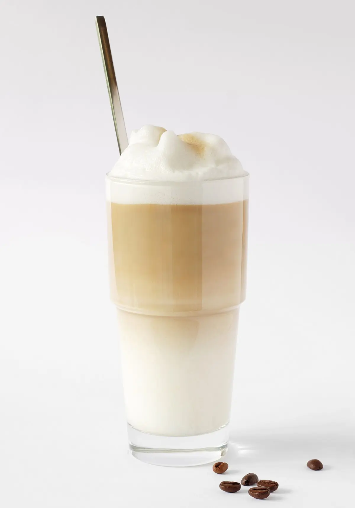
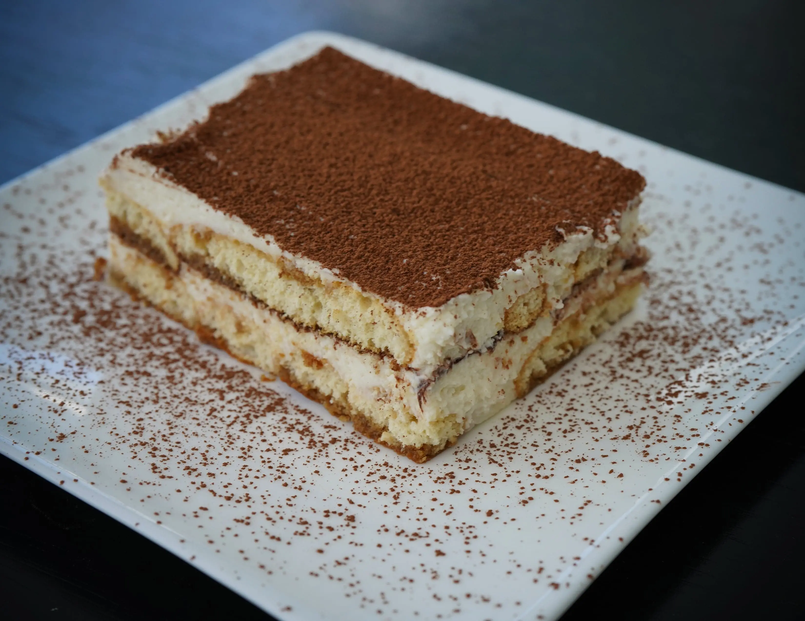

Latte Macchiato
Ingredientes:
- 1 taza de leche caliente
- 1 taza de café espresso
- 1 cucharada de jarabe de vainilla
Preparación:
- Prepara un café espresso y resérvalo.
- Calienta la leche en un recipiente hasta que esté bien caliente pero no hirviendo.
- Vierte la leche caliente en un vaso alto y agrega el jarabe de vainilla.
- Con cuidado, vierte el café espresso sobre la leche caliente para crear una capa en la parte superior.
- Sirve caliente y disfruta.
Tiramisú de Café
Ingredientes:
- 250 gramos de queso mascarpone
- 3 huevos
- 3 cucharadas de azúcar
- 1 taza de café espresso
- 1 paquete de bizcochos de soletilla
- Cacao en polvo para decorar
Preparación:
- Prepara un café espresso y resérvalo.
- En un bol, bate las yemas de huevo con el azúcar hasta que se forme una crema.
- Agrega el queso mascarpone a la crema y mezcla bien hasta que quede suave.
- Bate las claras de huevo a punto de nieve y agrégalas a la mezcla de mascarpone, revolviendo suavemente para integrar todo.
- Moja los bizcochos de soletilla en el café espresso y acomódalos en una bandeja para formar la base del tiramisú.
- Vierte la mitad de la mezcla de queso mascarpone sobre los bizcochos y cubre con otra capa de bizcochos mojados en café.
- Vierte el resto de la mezcla de queso mascarpone sobre los bizcochos y espolvorea cacao en polvo por encima.
- Refrigera el tiramisú durante al menos 2 horas antes de servir.